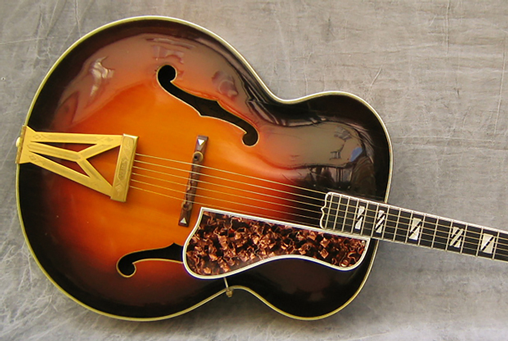

1936 Gibson Super 400
Notes: The arrival of an original series Super 400 is rare enough hereabouts, and always cause for celebration. Introduced in late 1934, the Super 400 was the first commercially produced super jumbo sized orchestra guitar; the largest, most ornate and most costly guitar the Gibson company had ever produced. With a whopping $400 price tag during the Great Depression, it’s not surprising that very few of these ultra-deluxe models left the factory. In 1935, the first full year of production, only 63 Super 400 guitars were built, and the year this stunning example rolled off the line, production had dwindled to a mere 29 instruments total.

| Material | Dimensions | Appointments |
|---|---|---|
| Rose wood sides and back, ebony neck. maple top | 45 x 16 x 32, 14 frett scale | Gold mother of pearl Inlays , Ivory tuners |
| Year | Collectibility | Market Value |
| 1936-1956 | A++ | $15,000 |